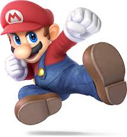

Mario es un personaje bien equilibrado en velocidad, peso y poder, lo que lo convierte en una excelente opción para aprender los fundamentos del juego. ¡Es un clásico! 🎮
Mario es un personaje bien equilibrado en velocidad, peso y poder, lo que lo convierte en una excelente opción para aprender los fundamentos del juego. ¡Es un clásico! 🎮
Link es un personaje poderoso y versátil, pero un poco más lento en comparación con otros luchadores. Es ideal para jugadores que prefieren un estilo de combate más estratégico y basado en proyectiles. 🛡️🗡️
Donkey Kong es un personaje lento pero muy resistente, lo que lo hace difícil de lanzar fuera del escenario. Su juego se centra en golpes fuertes y movimientos que controlan el espacio, lo que lo convierte en una amenaza en manos de un jugador paciente y estratégico. ¡Es un personaje divertido y contundente! 🦍💥
Samus es un personaje unico y versátil con un estilo de combate cuerpo a cuerpo y con distancia, es un pesonaje un poco lento pero su capacidad de controlar proyectiles es ideal para jugadores que disfrutan de un estilo de combate estrategico y variado!